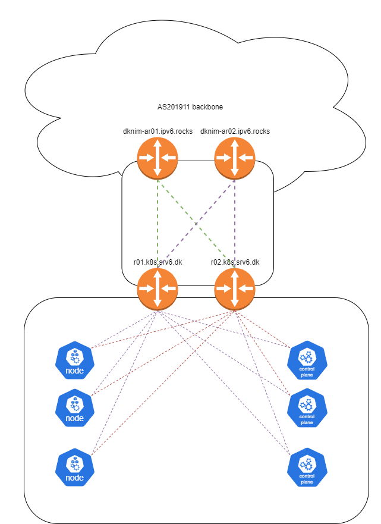

Overview
The kubernetes lab uses Cilium as the CNI, in this deployment Cilium is running IPv6 only in native-routing mode with BGP peerings to two virtual VYOS routers acting as essentially a mix between TOR switches and a CE router for my personal ASN AS201911.
Cilium was chosen as the CNI due to the following reasons - Excelent BGP support - Interesting observability tools though Hubble - High performance due to eBPF - Great support for network policies - Support for advanced networking features i might want to checkout like srv6 in k8s - Built in gateway API and ingress
See diagram below for a vistual representation

Addressing
Due to running IPv6 only in my own ASN, i have assigned a /48 network to this k8s lab.
Some of the plan looks the way it does due to previously being part of a shared /48 network with other lab infra, cleaning up the IP plan is todo point for a time where the cluster is down anyways.
The addressing plan looks as follows
| Prefix | Location | Use |
|---|---|---|
| 2a0e:97c0:ae3::/48 | Lab | Assigned Aggregate |
| 2a0e:97c0:ae3:c100::/112 | Cluster | K8S Service subnet |
| 2a0e:97c0:ae3:c200::/56 | Cluster | K8S PodCIDR |
| 2a0e:97c0:ae3:c401::/64 | Cluster | K8S Cilium LB IP pool |
| 2a0e:97c0:ae3:fff0::/64 | Vlan 2502 - K8S Node network | Node IP's |
| 2a0e:97c0:ae3:ffff::/64 | Loopback aggregates | Assigned Aggregate |
| 2a0e:97c0:ae3:ffff::1/128 | r01.k8s.srv6.dk | MGMT Loopback |
| 2a0e:97c0:ae3:ffff::2/128 | r02.k8s.srv6.dk | MGMT Loopback |
Cilium configuration
Cilium is installed doing setup of the cluster, for more information about that see Cluster setup and patch_infra.sh script
For configuration related parameters, I am using a kustomization deployed by fluxcd to manage it. This choice have been made in order to have as much declaritive, easy to manage configuration as posible.
Loadbalancer pools
The cluster needs external IP's to assign to any service of the type loadBalancer, given i have an ipv6 only cluster with my own address space, the most obivious choice was to use global ipv6 in this case, but you can absolutly find other solutions if that's not posible for your setup.
# cluster/infra/cilium/lb-ipam.yaml
apiVersion: "cilium.io/v2alpha1"
kind: CiliumLoadBalancerIPPool
metadata:
name: "lb-pool"
spec:
blocks:
- cidr: "2a0e:97c0:ae3:c401::/64"
BGP Configuration
Let's look at the general BGP setup. There is quite a lot going on here, but in it basicly just does the following * Creates a BGP "Cluster" called cilium-bgp, and provisions it on all nodes * Specifies that the local-as is 65500 * Sets up peerings to R01.k8s.srv6.dk and R02.k8s.srv6.dk * Creates a CiliumBGPPeerConfig (Peer group) specifying that ipv6 unicast is the only family enabled, and setting a password
# cluster/infra/cilium/bgp.yaml
apiVersion: cilium.io/v2alpha1
kind: CiliumBGPClusterConfig
metadata:
name: cilium-bgp
namespace: kube-system
spec:
nodeSelector:
matchLabels:
kubernetes.io/os: linux
bgpInstances:
- name: "instance-65500"
localASN: 65500
peers:
- name: "r01"
peerASN: 65666
peerAddress: 2a0e:97c0:ae3:fff0::1
peerConfigRef:
name: "cilium-peer"
- name: "r02"
peerASN: 65666
peerAddress: 2a0e:97c0:ae3:fff0::2
peerConfigRef:
name: "cilium-peer"
---
apiVersion: cilium.io/v2alpha1
kind: CiliumBGPPeerConfig
metadata:
name: cilium-peer
namespace: kube-system
spec:
authSecretRef: bgp-auth-secret
timers:
holdTimeSeconds: 9
keepAliveTimeSeconds: 3
ebgpMultihop: 4
gracefulRestart:
enabled: true
restartTimeSeconds: 15
families:
- afi: ipv6
safi: unicast
advertisements:
matchLabels:
advertise: bgp
NOTE: This uses the BGP secret set during cluster setup, please make sure the password accually matches.
NOTE: Under cluster setup anotate-nodes.sh was executed in the background, this script sets router-id's on a list of nodes. If some nodes won't peer check that a router-id have been set
Create annoncements
Ok, we are not quite done with the BGP configuration, we still needs to specify what to announce.
In my example due to running cilium in native-routing mode, i want to advertise everything i know. For this reason i am creating two CiliumBGPAdvertisement objects bellow advertising the following
- ExternalIP
- LoadBalancerIP
- ClusterIP
- PodCIDR
# cluster/infra/cilium/advertisements.yaml
---
apiVersion: cilium.io/v2alpha1
kind: CiliumBGPAdvertisement
metadata:
labels:
advertise: bgp
name: bgp-advertisements
spec:
advertisements:
- advertisementType: Service
selector:
matchExpressions:
- key: somekey # For some reason this works, and things break if i remove it, no this key does not exist anywhere
operator: NotIn
values:
- never-used-value
service:
addresses:
- ExternalIP
- LoadBalancerIP
- ClusterIP
---
apiVersion: cilium.io/v2alpha1
kind: CiliumBGPAdvertisement
metadata:
name: bgp-advertisements-podcidr
labels:
advertise: bgp
spec:
advertisements:
- advertisementType: "PodCIDR"
attributes:
communities:
standard: [ "65000:99" ]
localPreference: 99
Building the kustomization
Let's put it all togther in a simple kustomization
# cluster/infra/cilium/kustomization.yaml
apiVersion: kustomize.config.k8s.io/v1beta1
kind: Kustomization
metadata:
name: cillium-config
resources:
- lb-ipam.yaml
- bgp.yaml
- advertisements.yaml
Router configuration
This page is autogenerated, do not edit it directly see this for more information